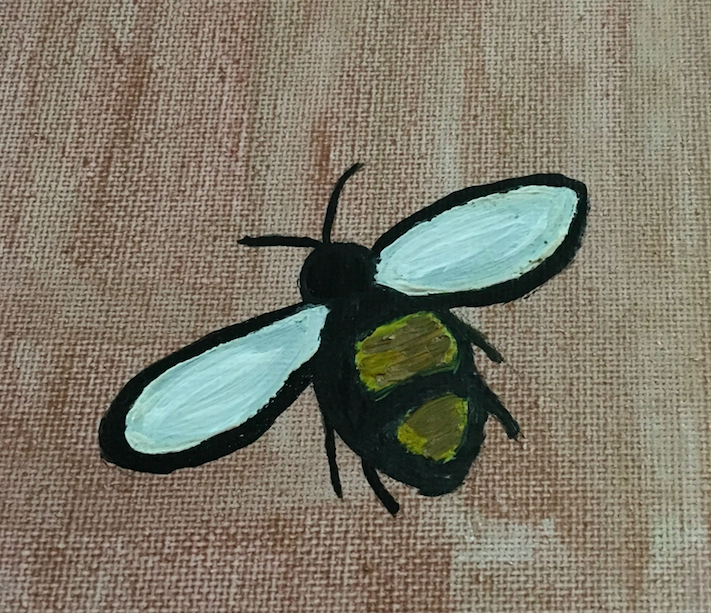
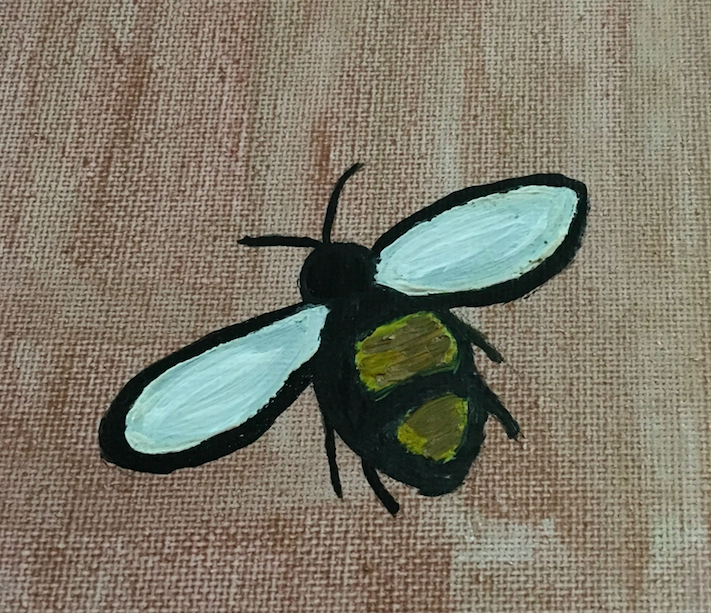
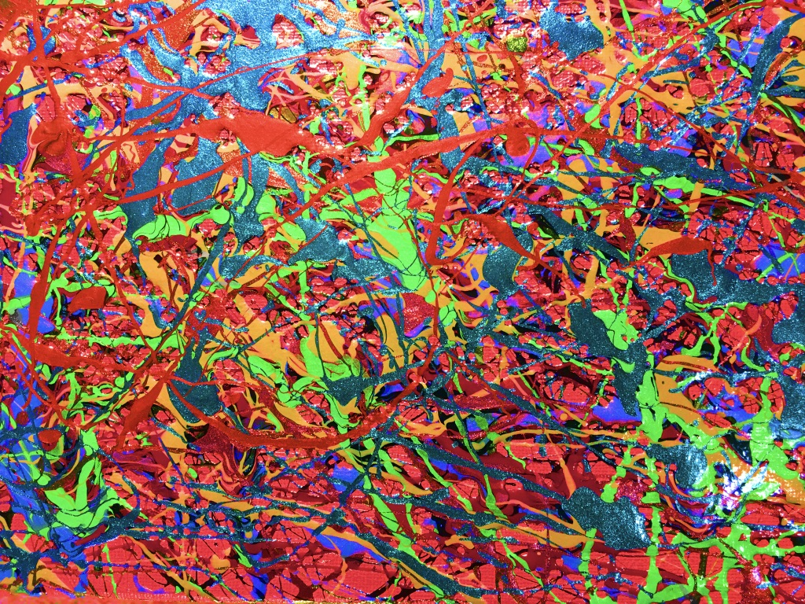
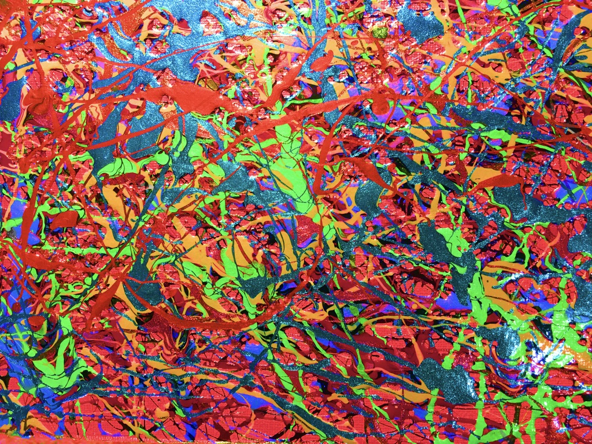

Developer

Artist
About Me

I'm an Artist and a Full-Stack Developer. Creative Thinker. Problem Solver. Empathetic Listener. Discussion Starter. Trustworthy Confidant.
I’ve gained valuable work experience through my travels and career choices. Driven to learn, adapt and work harder, I flourish under creative environments. Ambitious but most importantly a team player. I’ve followed my passions and interests into the real world and gained tangible experience in exchange.
I have been painting and drawing since I was young and I'm currently expanding my talents into Digital Illustration. I'm also a 300-hour Certified Yoga Instructor with a passion for health and balance in life.
Available for freelance web and WordPress development. Contact me to discuss creating something for you!


 

 
